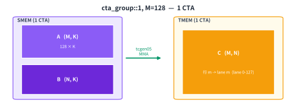
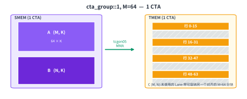
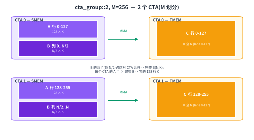
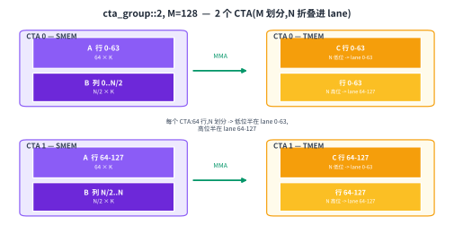
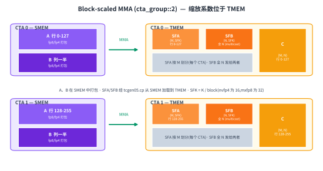

Tensor Cores: tcgen05#
Overview
tcgen05is Blackwell’s Tensor Core instruction family. Its MMA instruction performs tile matrix-multiply-accumulate work cooperatively, and the instruction is committed by one elected thread.The accumulator lives in TMEM instead of registers. The epilogue later brings it back into registers with
tcgen05.ld.cta_group::1andcta_group::2control whether one CTA or two CTAs cooperate on the MMA. That choice also changes how the M dimension is mapped into TMEM.Block-scaled MMA modes, such as
mxfp8andnvfp4, add scale-factor operands. The data operands live in SMEM, while the scale factors are staged through TMEM.
Dense linear algebra is where modern GPUs spend most of their useful work. A normal CUDA-core matrix multiply cannot get close to the advertised peak of the chip (GPU Execution Model). Fast GEMM and attention kernels reach that peak by feeding the Tensor Core with the right tile shapes, layouts, and synchronization.
The basic operation has not changed in spirit since Volta. A Tensor Core consumes matrix tiles, multiplies them, and accumulates the result. What changes from generation to generation is how the operation is issued, how the operands are laid out, and where the accumulator lives.
Blackwell makes a large change to the last part. The accumulator for tcgen05 is no longer kept as a long-lived register fragment. It is written into Tensor Memory, or TMEM (Special Memory: TMEM). That one change affects the whole kernel. The MMA writes to TMEM. Completion is tracked asynchronously. The epilogue later loads the accumulator out of TMEM and turns it back into the register fragment it wants for conversion and stores.
This chapter focuses on the compute instruction itself. TMA (Async Data Movement: TMA) is responsible for moving operands into SMEM. TMEM is responsible for holding the accumulator and some scale-factor operands. tcgen05.mma is the Tensor Core operation that sits between those two memory movements.
Interactive: tcgen05 accumulator behavior. Toggle the transpose of A or B, pick the output width N, and step through K iterations to watch partial sums accumulate in TMEM.
The tcgen05 MMA#
A tcgen05 MMA is the Blackwell Tensor Core matrix-multiply-accumulate instruction. It is a cooperative instruction. The work is performed for a warpgroup, and in some modes it can involve two CTAs from the same cluster. The instruction is not issued independently by every thread. One elected thread commits the operation on behalf of the participating group.
It helps to separate the MMA into three questions.
The first question is who cooperates. A normal mode uses one CTA, written as cta_group::1. A larger mode uses two CTAs in a cluster, written as cta_group::2. In both cases, the instruction represents one Tensor Core operation over a tile, not a scalar operation by one thread.
The second question is where the operands and result live. The data operands normally live in SMEM. Some variants can also read an A operand from TMEM. The accumulator is written to TMEM. The operand layouts have to match what the Tensor Core expects, including the swizzled shared-memory layouts used by the data operands (Data Layout and Its Notation).
The third question is how completion is observed. tcgen05.mma is asynchronous. Issuing the MMA does not mean the multiply-accumulate has finished. The instruction returns after the operation is committed, while the Tensor Core continues running. The kernel uses a commit group and an mbarrier to learn when the result is ready (Async Coordination: mbarriers).
That asynchronous behavior is what makes overlap possible. A fast kernel does not issue an MMA and immediately stall until it finishes. It can issue the MMA, start preparing later tiles, and wait only when the result is actually needed. The price is that every handoff must be explicit. If the epilogue reads TMEM before the MMA completion barrier has fired, it is reading too early.
The Accumulator Lives in TMEM#
On Ampere and Hopper, the accumulator is exposed to the program as registers. The MMA produces a per-lane register fragment, and the epilogue consumes that fragment directly. This is simple, but it ties the accumulator size to the register budget of each thread.
Blackwell breaks that link. tcgen05.mma writes its accumulator into TMEM, a Blackwell memory space scoped to the CTA. The accumulator can stay in TMEM through the compute phase, and the epilogue later uses tcgen05.ld to load it back into registers.
This changes the shape of the kernel. The register fragment is still important at the edges. The epilogue still wants registers so it can convert, apply elementwise work, and store the result. But the long-lived accumulator state is no longer a register allocation problem. It is a TMEM allocation and layout problem (Special Memory: TMEM).
This is why tcgen05 and TMEM have to be understood together. The MMA instruction decides what tile is computed. TMEM decides where the accumulator lands. The epilogue must use the matching load path to recover the accumulator in the register layout it expects.
cta_group::1 and cta_group::2#
A tcgen05 MMA can run in either cta_group::1 or cta_group::2 mode.
In cta_group::1, one CTA owns the MMA. Its operands are in that CTA’s SMEM, and its accumulator is written into that CTA’s TMEM.
In cta_group::2, two CTAs in a cluster cooperate on one MMA tile. Each CTA has its own SMEM and its own TMEM. The accumulator is not stored in one physical TMEM region spanning both CTAs. It is split across the two CTAs, with each CTA holding its own part. The even CTA issues the instruction and commits the completion barrier for the pair.
The choice matters because it changes how the logical accumulator tile C(M, N) maps to TMEM. TMEM has 128 hardware Lane rows and up to 512 hardware Col columns. In the TIRx layout notation, those axes are written as TLane and TCol. The MMA mode decides how rows and columns of C are placed onto those TMEM axes.
There are four useful cases to keep in mind.
The figures below follow the demo color convention: purple marks SMEM operands, orange marks TMEM accumulator state, and green marks the Tensor Core MMA path. CTA identity is shown by labels and position rather than by changing those hardware colors.
cta_group::1, M = 128#
This is the simplest case. One CTA computes a 128-row tile. TMEM also has 128 Lane rows. The mapping is therefore direct: row m of the accumulator maps to Lane m, and the N dimension maps to TMEM columns.
The result fills 128 Lane rows by N Col columns. This is the baseline picture. The CTA owns A and B in SMEM, and it owns the full accumulator tile in its TMEM.

cta_group::1, M = 64#
With M = 64, the accumulator has only 64 rows, but TMEM still has 128 Lane rows. The hardware does not simply pack rows 0 through 63 into lanes 0 through 63. Instead, it spreads them across the 128 lanes in four runs of 16 rows.
Rows 0 through 15 go to lanes 0 through 15. Rows 16 through 31 go to lanes 32 through 47. Rows 32 through 47 go to lanes 64 through 79. Rows 48 through 63 go to lanes 96 through 111.
This leaves gaps at lanes 16 through 31, 48 through 63, 80 through 95, and 112 through 127. Those gaps are intentional. With a different lane alignment, another independent M = 64 MMA can occupy the complementary lanes. This lets two smaller M tiles share the 128-lane TMEM structure without stepping on each other.
The N dimension still maps to TMEM columns. The unusual part is only the placement of M rows across Lane.

cta_group::2, M = 256#
When the M dimension is larger than one CTA can naturally hold, the MMA can use cta_group::2. For M = 256, the split is direct. CTA 0 holds rows 0 through 127. CTA 1 holds rows 128 through 255.
Each CTA uses its own TMEM Lane rows 0 through 127 and the full N columns. Physically, this is two separate 128-row TMEM regions, one in each CTA. Logically, they form one 256 by N accumulator tile.
Each CTA also supplies the part of A that corresponds to its M rows. B is available to both CTAs as required by the mode. The even CTA is responsible for issuing the MMA and committing the completion barrier for the pair.
This is the mode used by the two-CTA cluster GEMM in Scaling GEMM with Warp Specialization and Clusters.

cta_group::2, M = 128#
The cta_group::2, M = 128 mode still uses two CTAs, but the M dimension is shorter. Since there are only 128 rows total, each CTA receives 64 M rows.
The remaining lane capacity is used to pack the N dimension. Inside each CTA, one half of N occupies lanes 0 through 63, and the other half of N occupies lanes 64 through 127. This lets each CTA use all 128 Lane rows even though it owns only 64 rows of M.
So the split has two parts. M is split across the CTA pair, with 64 rows per CTA. N is then split within each CTA across the lower and upper halves of the TMEM Lane rows.

Across these modes, the principle is the same. tcgen05.mma computes a logical accumulator tile, but that tile must be placed into the physical 128 Lane by up to 512 Col TMEM space. The mode and M shape determine that placement. The rest of the kernel has to use the same mapping when it later reads the accumulator back out.
For the kernels here, the accumulator is usually f32 in TMEM. That is the common high-accuracy path. It is not the only possible accumulator type. The .kind::f16 path can accumulate in f16.
Operand Placement#
For the dense MMA modes, A and B are prepared in SMEM before the MMA runs. TMA is responsible for moving global memory tiles into SMEM. The kernel arranges those SMEM tiles in the layouts expected by the Tensor Core, including any required swizzle.
The accumulator C is written to TMEM. That is the main difference from earlier generations. The epilogue does not receive the accumulator directly as the output of the MMA instruction. It must explicitly load from TMEM with tcgen05.ld.
In cta_group::1, one CTA supplies the operands and owns the accumulator. In cta_group::2, each CTA supplies its own side of the operands from its own SMEM, and each CTA owns its own TMEM portion of the accumulator. When A is split by M, each CTA keeps the A rows for its own M slice. B is shared according to the mode, since both M slices multiply against the same N by K tile.
This separation is important when reading the kernel. SMEM placement answers how the Tensor Core reads A and B. TMEM placement answers where the accumulator goes. The two layouts are related by the MMA mode, but they are not the same memory space and cannot be treated as interchangeable.
Block-Scaled MMA#
The dense modes read their data operands directly from SMEM and accumulate into TMEM. Block-scaled MMA adds two more operands: scale-factor tensors for A and B.
This is used for very low-precision formats such as mxfp8 and nvfp4. Low-precision formats are efficient, but their dynamic range is small. A single global scale is usually too crude. If the scale is chosen for the largest values, smaller values lose precision. If the scale is chosen for small values, larger values may clip.
Block scaling fixes this by assigning scale factors to small K blocks. A group of consecutive K elements shares one scale. The MMA conceptually dequantizes each block with its scale and then accumulates the products in the accumulator type.
For A and B, this introduces two scale-factor tensors:
SFA(M, SFK)
SFB(N, SFK)
where SFK = K / B, and B is the block size along K.
The exact block size depends on the format. The important point is that the scale axis follows K at a coarser granularity. Each scale factor describes a block of K values, not one individual element and not the whole matrix.
The mathematical shape is:
acc += (Aq * scale_a) * (Bq * scale_b)
where Aq and Bq are quantized low-precision values, and the scales restore their approximate magnitudes before accumulation.
The scale dtype also matters. With e8m0 scales, each scale is effectively a power of two. With e4m3 scales, as used by nvfp4, the scale is a small floating-point value and can represent values between powers of two.
Where the Scale Factors Live#
Block-scaled tcgen05.mma differs from the dense MMA in one important placement rule: the scale factors are read from TMEM.
The data operands A and B are still staged in SMEM. The scale factors SFA and SFB are staged through TMEM. Since TMA loads into SMEM, the scale factors usually take an extra step. The kernel first loads them into SMEM, then copies them from SMEM to TMEM with tcgen05.cp. Only after the scale factors are in TMEM can the block-scaled MMA read them.
This gives the scale factors a different movement path from the data operands:
A, B: global memory to SMEM, then MMA reads SMEM
SFA, SFB: global memory to SMEM, then tcgen05.cp copies SMEM to TMEM, then MMA reads TMEM
The TMEM layout for scale factors is compact. A 128-row scale vector can pack into 32 Lane rows, using a mapping based on r % 32 for the lane position and r / 32 along columns. The data can then be broadcast across the four warps that read the full 128 Lane space (Tensor Core Operand Layouts Across GPU Generations).
This is a good example of why TMEM layout has to be explicit. The accumulator layout and the scale-factor layout are both in TMEM, but they are not the same layout. The accumulator uses the MMA output mapping. The scale factors use the compact layout expected by the block-scaled MMA.
Scale Factors in cta_group::2#
In the two-CTA case, scale factors follow the data they scale.
SFA scales A. Since A is split by M across the CTA pair, SFA is also split by M. Each CTA holds the SFA rows that correspond to its own A rows.
SFB scales B. Since both CTAs multiply against the same B tile, SFB has to be visible to both CTAs. In practice, that means SFB is multicast across the CTA pair.
This is the source of the common loading pattern in block-scaled cluster GEMM. SFA is loaded per CTA, using the mask for the CTA’s own M slice. SFB is broadcast to the pair, because both CTAs need the same N-side scale factors.

Keeping the MMA Contracts Matched#
A Blackwell GEMM tile moves through several specialized paths.
TMA brings A and B from global memory into SMEM. For block-scaled modes, it also brings scale factors into SMEM. tcgen05.cp moves those scale factors into TMEM when needed. tcgen05.mma reads its operands, runs asynchronously on the Tensor Core, and accumulates into TMEM. The completion barrier tells the kernel when that accumulator is ready. The epilogue then uses tcgen05.ld to load the accumulator from TMEM back into registers and store the final output.
Across those paths, the kernel has to keep three contracts matched: the SMEM operand layout, the TMEM accumulator or scale-factor layout, and the asynchronous completion signal that makes the next consumer safe to run.